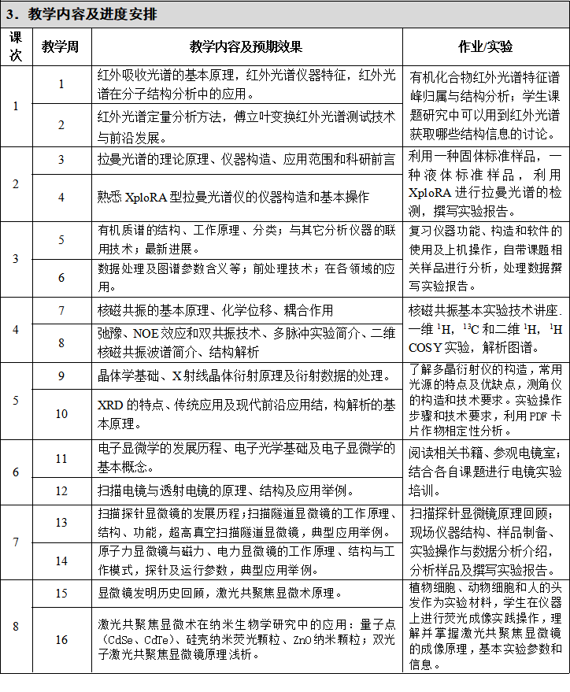

2026春 · CHEM50005.01 · 张人、谢颂海、朱丽娜、宋国新、吕龙飞、杨宇红、陈燕、任庆广、刘新刚、吕新春
来源：复旦教务系统教学大纲，本轮使用已授权账号下载。原始正文与考核信息；去除联系方式和网页脚本，内嵌图片按原字节去重保存。
《高等结构分析》（Advanced Structural Analysis）是复旦大学分析测试中心开设的研究生课程，面向化学类及其他理工专业。课程共 54 学时（含 18 学时实验），18 教学周，学分为 2+1。通过系统讲授红外、拉曼、核磁等八大现代结构测试技术的原理与应用，搭配实验实操，助力学生掌握前沿测试手段，为研究生阶段科研工作筑牢核心技术基础。
"Advanced Structural Analysis" is a postgraduate course offered by the center for Analysis and Measurement of Fudan University, targeting chemistry and other science and engineering majors. The course consists of a total of 54 class hours (including 18 experimental/practical hours) over 18 teaching weeks, with a credit rating of 2+1. Through systematic teaching on the principles and applications of eight major modern structural testing technologies such as infrared spectroscopy, Raman spectroscopy, and nuclear magnetic resonance (NMR), combined with experimental hands-on practice, the course helps students master cutting-edge testing methods and lays a solid core technical foundation for their scientific research during the postgraduate period.
通过本课程的学习和实践，要求学生掌握红外、拉曼、核磁、质谱、X射线衍射、电子显微镜、扫描探针显微镜、共聚焦显微镜等现代分析技术的原理、应用及实验操作与数据处理，了解结构分析技术的进展，拓展视野、开阔思路，更好地开展研究生阶段的科研工作，为胜任今后的工作打下基础。
本课程分为两个学期，第一学期为理论学习，第二学期为实验学习。理论分为8部分，分别由8位老师授课。实验教学阶段，每位同学选择3个章节的实验进行现场仪器操作学习。

本课程理论授课分为八个章节，每章节授课4课时，每周授课2课时，共16周32课时。具体进度安排如上表所示。|
|
|||||
|
序号 |
名称 |
作者 |
出版机构 |
出版日期 |
是否必读 |
|
0 |
《高等结构分析》（第二版） |
马礼敦 |
复旦大学出版社 |
2006年 |
教材／是 |
|
1 |
近代傅立叶变换红外光谱技术及应用 |
吴谨光 |
科学技术文献出版社 |
1994年 |
否 |
|
|
傅里叶变换红外光谱仪 |
翁诗甫 |
化学工业出版社 |
2005年 |
是 |
|
|
Handbook of Vibrational Spectroscopy |
John M. Chalmers, Peter R. Griffiths |
WILEY |
2002年 |
否 |
|
|
Fourier Transform Infrared Spectrometry (Second Edition) |
Peter Griffiths, James A. De Haseth |
WILEY |
2007年 |
否 |
|
2 |
拉曼光谱学 |
D·A·朗 |
科学出版社 |
1983年 |
否 |
|
|
Modern Raman Spectroscopy - A Practical Approach |
E. Smith et al |
Wiley |
2005年 |
否 |
|
|
分子振动光谱学原理 |
吴国桢 等 |
清华大学出版社 |
2018年 |
否 |
|
3 |
《有机质谱解析》 |
王光辉，熊少祥 |
化学工业出版社 |
2005年 |
否 |
|
|
《色谱质谱联用技术》 |
盛龙生 苏焕华 郭丹滨 |
化学工业出版社 |
2006年 |
否 |
|
4 |
Basic One- and Two-Dimensional NMR |
Horst Friebolin |
Wiley-VCH |
2005年 |
否 |
|
|
Understanding NMR Spectroscopy |
James Keeler |
John Wiley＆Sons |
2005年 |
否 |
|
|
现代核磁共振实用技术及应用 |
毛希安 |
科学技术文献出版社 |
2000年 |
否 |
|
5 |
《近代X射线多晶体衍射-实验技术与数据分析》 |
马礼敦 |
化学工业出版社 |
2004年 |
否 |
|
|
多晶X射线衍射技术与应用 |
江超华 |
化学工业出版社 |
2014年 |
否 |
|
6 |
电子显微分析 |
章晓中 |
清华大学出版社 |
2006年 |
是 |
|
|
扫描电镜和能谱仪的原理与实用分析技术 |
施明哲 |
电子工业出版社 |
2015年 |
是 |
|
|
显微传：清晰的纳米世界 |
章效锋 |
清华大学出版社 |
2015年 |
否 |
|
|
Transmission Electron Microscopy |
D. B. Williams and C. B. Carter |
Springer, New York |
2009年 |
否 |
|
|
Scanning Electron Microscopy and X-ray Microanalysis |
Joseph I. Goldstein et al. |
Springer, New York |
2003年 |
否 |
|
7 |
扫描隧道显微术及其应用 |
白春礼 |
上海科学技术出版社 |
1992年 |
否 |
|
|
扫描探针显微技术理论与应用 |
彭昌盛 |
化学工业出版社 |
2007年 |
否 |
|
|
扫描探针显微术应用进展 |
朱传凤，王琛 |
化学化工出版社 |
2007年 |
否 |
|
8 |
激光扫描共聚焦显微镜技术 |
王春梅，黄晓峰 |
第四军医大学出版社 |
2004年 |
是 |
|
|
激光扫描共聚焦显微镜技术教程 |
袁兰 |
北京大学医学出版社 |
2004年 |
否 |
| 项目 | 比例 | 评定说明 |
|---|---|---|
| 出勤Attendance | 10.0% | |
| 期末考试Final Examination：闭卷 | 60.0% | |
| 作业/实验/实践Assignment | 30.0% |